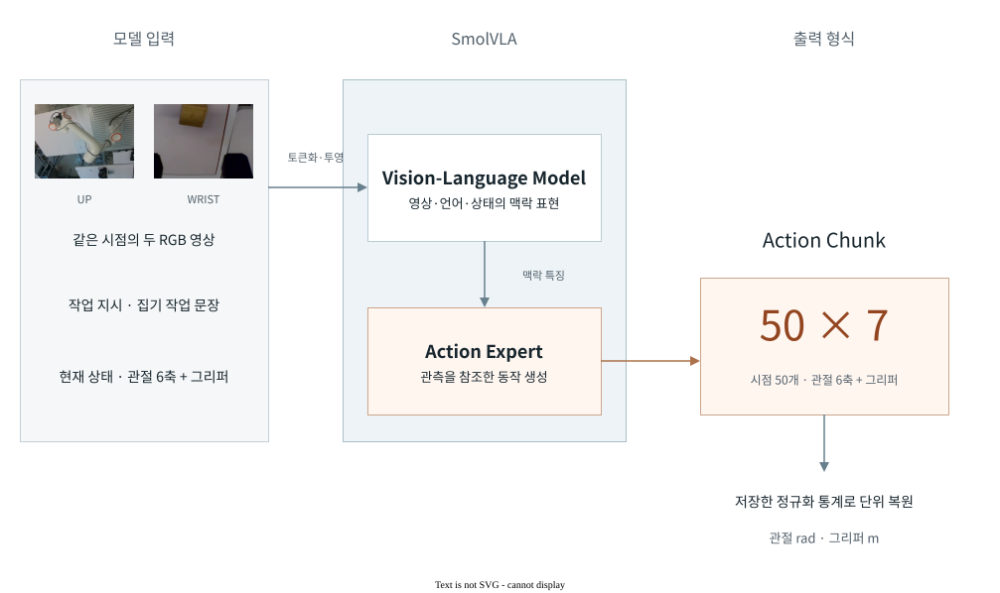
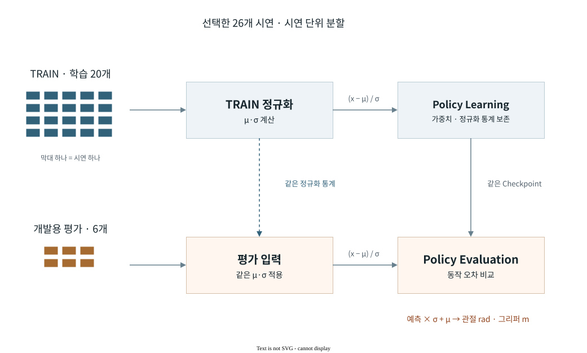
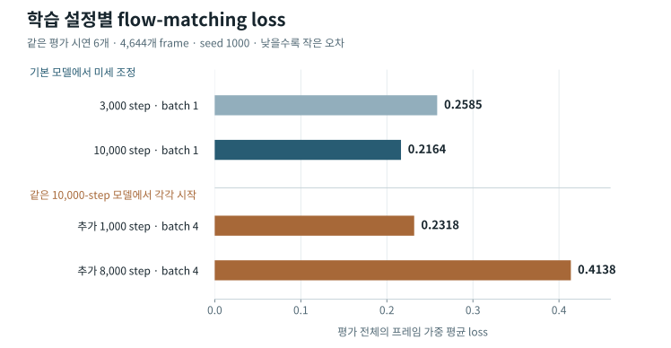
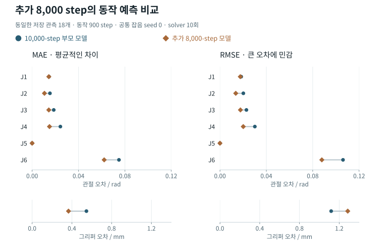
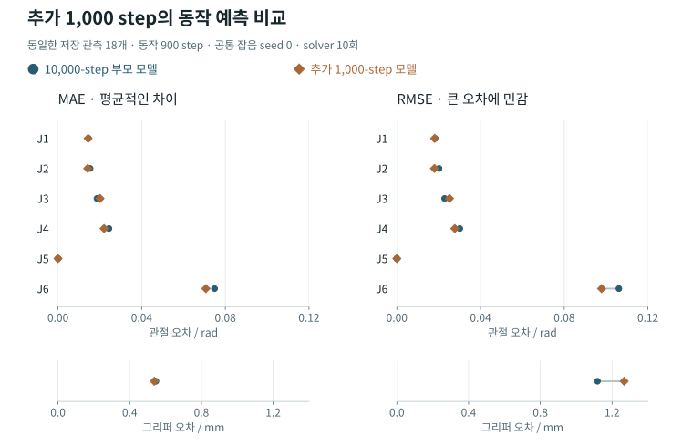

모델 구조
영상·작업 지시를 반영한 동작 생성
두 카메라 영상·작업 지시·현재 상태를 입력받아 다음 관절·그리퍼 동작을 생성한다.

입력 토큰과 어텐션 구조
영상·언어 모델(VLM)은 두 카메라 영상, 작업 문장과 로봇 상태를 토큰으로 변환해 맥락 특징을 계산한다. 동작 생성기(Action Expert)는 이 특징을 참조하는 교차 어텐션과 동작 토큰 사이의 관계를 계산하는 자기 어텐션을 번갈아 사용한다.
한 시점의 관측에서 생성하는 출력은 50개 동작으로 이루어진 action chunk이다. FR5의 평가 경로는 checkpoint에 저장된 postprocessor로 정규화를 되돌려 각 출력을 rad·m 단위로 비교한다. 없는 카메라 슬롯은 마스크로 구분한다.
Training Entrypoint
Split & Normalization
시연 단위로 학습·평가를 나누고 TRAIN에서만 정규화 통계를 구해 평가 데이터의 누출을 막는다.

시연 분할과 정규화 원리
인접 프레임은 외관과 동작이 비슷하므로 시연 단위로 분리한다. TRAIN의 축별 평균 μ·표준편차 σ로 (x − μ) / σ를 계산하고, 예측은 저장된 같은 통계로 rad·m 단위에 복원한다.
데이터 확장과 평가 대상 보존
추가 데이터의 효과를 비교하도록 기존 평가 시연을 유지한다. 새 평가 조건을 더할 때도 비교 모델은 같은 목록을 사용한다.
| 구분 | 기존 데이터 | 새 데이터와 통합한 뒤 |
|---|---|---|
| 저장 위치·번호 | 원래 데이터의 위치 | 통합 순서에 맞춰 새로 배정 |
| 평가 시연 | 선택한 원본 시연 | 같은 원본 시연 유지 별도로 정한 평가 시연 추가 |
| 학습 시연 | 선택 목록 중 평가 대상 제외 | 선택한 원본 중 최종 평가 대상 제외 |
원본의 TRAIN·EVAL 배정을 유지한 채 통합 데이터의 번호로 매핑한다. 정규화 통계는 TRAIN에서만 구한다.
원본 식별과 분할 검증
평가 시연은 원본 데이터 식별값, 원래 시연 번호와 내용 식별값으로 고정한다. 기존 cohort만 쓰면 그 평가 대상을 유지하며, 독립적으로 정한 cohort를 합칠 때는 각 TRAIN·EVAL 배정을 보존한다. 학습 전에 원본 연결을 다시 확인해 평가 대상의 누락, 원본의 중복·변경을 거부한다. 이 표는 구현 원리이며, 아래 학습 실험은 당시의 20/6 분할로 수행한 결과이다.
원본 매핑·분할·native 데이터 로더 구현 ↗Flow matching 기반 동작 생성
관측을 조건으로 잡음을 연속 동작으로 바꾸는 flow matching을 사용한다.
무작위 비율 τ로 혼합
관측을 참조해 변화율 예측
예측 변화율과 목표의 차이 최소화
시연 동작에 잡음을 섞은 입력을 만들고, 모델이 예측한 변화율과 목표 변화율의 평균 제곱 오차를 줄인다. 아래의 flow-matching loss는 이 오차이며 관절 각도의 오차와 단위가 다르다.
50개 시점의 동작을 함께 초기화
τ를 1에서 0으로 줄이며 적분
관절·그리퍼의 연속 동작 묶음
한 번의 생성 계산에서 50개 시점의 동작을 함께 갱신한다. 이 비교의 저장 설정은 10번 갱신해 최종 동작 묶음을 만든다. 생성 계산 10회와 동작 시점 50개는 서로 다른 축이다.
학습 실험
학습 설정별 평가 결과
같은 시연으로 추가 학습했을 때 예측이 어떻게 달라지는지 비교했다.

기본 학습의 loss는 0.2585 → 0.2164로 감소했다. 추가 8,000 step에서는 loss가 91.2% 증가했으며, 아래 동작 비교와 함께 해석한다.
추가 학습 설정
추가 학습은 10,000-step 가중치에서 시작한 warm-start이다. batch를 1→4로 바꾸고 optimizer·학습률·난수·데이터 읽기 상태를 초기화했다.
시연별 결과와 실행 조건
| 저장 영상 길이 | 평가 frame | 3,000 step | 10,000 step | 추가 1,000 | 추가 8,000 |
|---|---|---|---|---|---|
| 21.10초 | 633 | 0.132649 | 0.100963 | 0.136203 | 0.178338 |
| 21.07초 | 632 | 0.615368 | 0.547819 | 0.613703 | 1.394869 |
| 31.33초 | 940 | 0.107717 | 0.075258 | 0.079040 | 0.071600 |
| 32.20초 | 966 | 0.124169 | 0.091736 | 0.089570 | 0.092773 |
| 31.77초 | 953 | 0.467385 | 0.413534 | 0.401304 | 0.769159 |
| 17.33초 | 520 | 0.117254 | 0.079974 | 0.113498 | 0.072067 |
평가는 각 실행의 전체 4,644개 frame과 seed 1000을 사용했다. 네 checkpoint의 전·후처리 설정과 정규화 통계가 바이트 단위로 같음을 확인했다. 추가 학습 두 실행의 부모 checkpoint도 같다.
이 값은 반복 사용한 개발용 평가 데이터의 flow-matching loss이다. 실제 로봇의 작업 성공률은 별도 실물 평가에서 측정한다.
관절·그리퍼 단위의 예측 비교
같은 18개 관측·잡음에서 부모 모델과 추가 8,000-step 모델의 동작 오차를 비교했다.

MAE는 7축 모두 감소했다. 그리퍼 RMSE는 14.9% 증가해 일부 큰 오차가 남았다.
J6은 전체 평균이 개선됐지만 한 시연의 MAE는 0.0251 → 0.0416 rad로 증가했다.
축별 수치와 시연별 J6 비교
| 축 / 단위 | 부모 MAE | 추가 MAE | 부모 RMSE | 추가 RMSE |
|---|---|---|---|---|
| J1 / rad | 0.0145323 | 0.0143962 | 0.0183357 | 0.0175215 |
| J2 / rad | 0.0153682 | 0.0106194 | 0.0201753 | 0.0136145 |
| J3 / rad | 0.0186306 | 0.014379 | 0.0228193 | 0.0176493 |
| J4 / rad | 0.0243621 | 0.0149661 | 0.0300767 | 0.0201003 |
| J5 / rad | 4.63062e-07 | 4.61075e-07 | 9.5594e-07 | 1.00247e-06 |
| J6 / rad | 0.0748784 | 0.0621478 | 0.106129 | 0.0878462 |
| Gripper / mm | 0.546351 | 0.366003 | 1.11876 | 1.28558 |
개발용 평가 시연 6개의 세 시점씩, 총 18개 관측에서 50개 동작을 생성했다. 유효 target은 900개이며 서로 연관된 동작 구간을 포함한다. J5의 RMSE도 증가했으나 두 모델 모두 약 0.000001 rad 규모이다. 그리퍼는 원래 보고서의 m 값을 mm로 환산했다.
| 저장 영상 길이 | 부모 MAE | 추가 MAE | 부모 RMSE | 추가 RMSE |
|---|---|---|---|---|
| 21.10초 시연 | 0.02325 | 0.01897 | 0.02972 | 0.02171 |
| 21.07초 시연 | 0.07192 | 0.05814 | 0.08956 | 0.08327 |
| 31.33초 시연 | 0.02508 | 0.04163 | 0.03022 | 0.05430 |
| 32.20초 시연 | 0.07846 | 0.06997 | 0.10940 | 0.09767 |
| 31.77초 시연 | 0.14229 | 0.11615 | 0.17327 | 0.13992 |
| 17.33초 시연 | 0.10826 | 0.06802 | 0.12558 | 0.08265 |
각 시연의 기록 길이로 표본을 구분했다. 강조한 시연의 같은 관측·정답 동작과 원본 식별자는 아래 평가 보고서에서 확인할 수 있다.
이 비교는 반복 사용한 development 관측에서의 동작 예측 진단이다. 학습 정책의 실물 성공률은 별도 평가 대상이다.
Loss와 동작 오차의 차이
| 지표 | 측정 대상 | 비교 범위 |
|---|---|---|
| Flow-matching loss | 잡음이 섞인 입력의 변화율 예측 오차 | 4,644개 frame |
| MAE · RMSE | 10회 생성 계산 후 동작과 시연의 차이 | 18개 관측 · 900개 유효 target |
MAE는 평균적인 차이, RMSE는 큰 오차에 더 민감하다. 두 지표는 측정 대상과 표본 범위가 달라 함께 살펴본다.
이전 비교 · 같은 부모에서 추가 1,000 step

추가 1,000 step에서 MAE는 7축 중 5축이 감소했지만, J3와 J5는 증가했다. 그리퍼의 RMSE는 1.119 → 1.268 mm로 증가했다. 전체 손실, 평균 동작 오차와 큰 오차를 함께 확인해 모델의 변경을 판단한다.
같은 관측에서의 축별 수치
| 축 / 단위 | 부모 MAE | 추가 MAE | 부모 RMSE | 추가 RMSE |
|---|---|---|---|---|
| J1 / rad | 0.014532 | 0.014407 | 0.018336 | 0.018042 |
| J2 / rad | 0.015368 | 0.014198 | 0.020175 | 0.017956 |
| J3 / rad | 0.018631 | 0.020109 | 0.022819 | 0.025149 |
| J4 / rad | 0.024362 | 0.022037 | 0.030077 | 0.027697 |
| J5 / rad | 4.6306e-07 | 5.1326e-07 | 9.5594e-07 | 1.0041e-06 |
| J6 / rad | 0.074878 | 0.070684 | 0.10613 | 0.097845 |
| Gripper / mm | 0.54635 | 0.5373 | 1.1188 | 1.2676 |
같은 시연의 세 시점씩 총 18개 관측, 유효 동작 900 step을 사용한다. J5의 오차는 두 모델 모두 매우 작으므로 상대 변화율과 절대 크기를 함께 읽는다. 원래 m 단위인 그리퍼는 그림과 표에서 mm로 환산했다.
과거 진단 · loader 수정 전 두 seed 비교
학습 손실과 함께 실제 동작 단위의 오차를 확인해 어느 관절·그리퍼에서 차이가 생겼는지 분석한다. 전체 평균과 개별 축·시연의 결과를 함께 비교한다.
MAE는 각 예측 오차의 절댓값을 평균해 전반적인 차이를 나타낸다. RMSE는 오차를 제곱해 평균한 뒤 제곱근을 취하므로 큰 오차에 더 민감하다. 한 축에서 MAE가 줄고 RMSE가 늘었다면, 평균적인 차이의 감소와 일부 큰 오차가 함께 나타날 수 있다.
저장 관측에서 예측한 동작을 checkpoint의 postprocessor로 복원해 rad·m 단위로 비교했다. 각 시연의 세 시점과 두 seed를 사용하며, 관측 상태를 그대로 유지한 경우를 비교 기준으로 둔다. 아래 수치는 Rollout loader 수정 전 평가 결과이다.

막대는 0에서 시작하며 짧을수록 오차가 작다. 여섯 관절은 같은 rad 눈금, 그리퍼는 별도의 m 눈금을 사용한다. 조건을 바꾸면 눈금 범위도 바뀐다.
선택한 조건의 수치 표
| 축 / 단위 | 상태 유지 참조 | 3,000 step | 10,000 step |
|---|
그래프에는 유효숫자 세 자리, 표에는 다섯 자리로 표시한다. 전체 정밀도의 값은 원래 비교 자료에 보존한다.
축·시연별 결과에는 차이가 있다. J6은 seed 0의 합산 MAE가 감소했지만 RMSE는 증가했다. 영상 길이 31.77초인 시연에서는 J6 MAE가 두 seed에서 모두 증가했다. 거의 움직이지 않는 J5의 작은 오차 차이도 별도로 확인한다.
상태 유지 참조보다 오차가 큰 축도 있다. 이 참조는 관측 상태를 그대로 유지한다고 가정해 계산한 사후 진단 기준이다.
전체 합산은 seed마다 18개 관측의 유효 동작 900 step을 사용한다. 900 step은 18개 관측에서 생성한 동작 묶음의 유효 시점 수이다. 관절 rad와 그리퍼 m는 단위가 달라 합산하지 않는다.